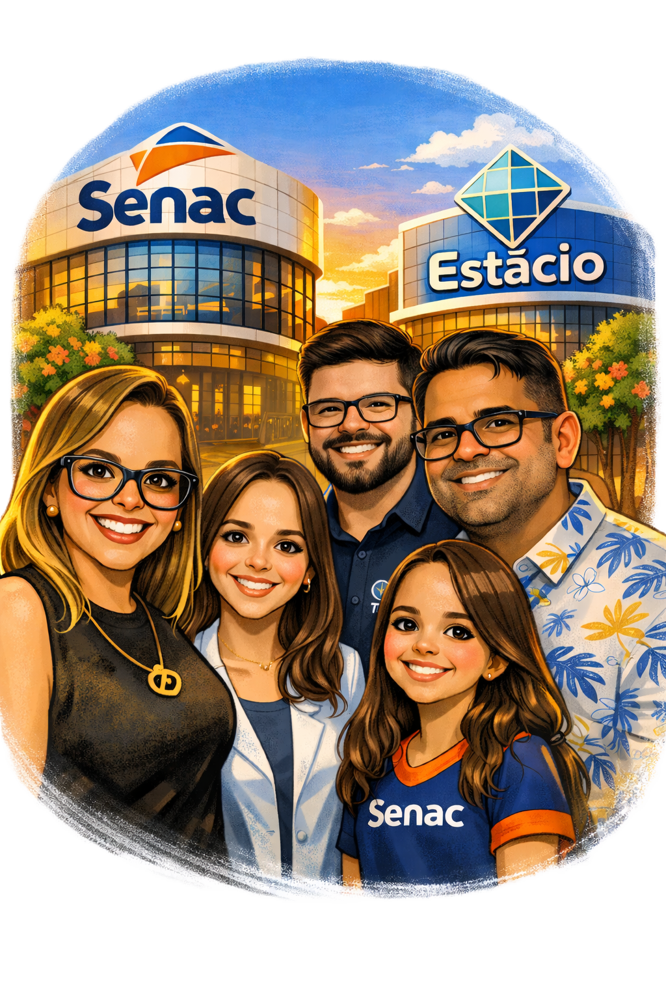

Coragem para sonhar, coragem para recomeçar
Enilda Aparecida Mendes da Rosa Cáceres
Educadora | Professora Universitária | Coordenadora Estácio | Docente Senac MS

Coragem para sonhar, coragem para recomeçar
Educadora | Professora Universitária | Coordenadora Estácio | Docente Senac MS